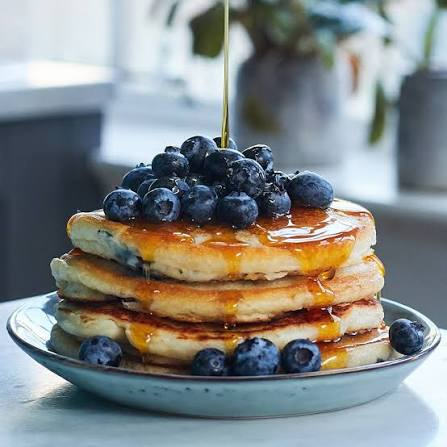

Home
Fluffy American Pancakes
Description
Fluffy American pancakes are a breakfast staple loved by people of all ages around the world. Unlike thin European crêpes, these pancakes are thick, light, and incredibly airy thanks to the baking powder in the batter. They are quick and easy to make, requiring only a few basic pantry ingredients that you likely already have at home. Perfectly golden on the outside and pillow-soft on the inside, they serve as a blank canvas for your favorite toppings. You can stack them high and top them with maple syrup, a cube of melting butter, fresh berries, or a drizzle of chocolate sauce for the perfect weekend morning treat.
Ingredients
- 200g all-purpose flour
- 1 tbsp baking powder
- 2 tbsp sugar
- A pinch of salt
- 1 large egg
- 250ml milk
- 50g butter, melted (plus extra for cooking)
- 1 tsp vanilla extract (optional)
Steps
- Mix the dry ingredients: In a large bowl, whisk together the flour, baking powder, sugar, and a pinch of salt.
- Mix the wet ingredients: In a separate bowl or measuring jug, whisk the egg, milk, melted butter, and vanilla extract until well combined.
- Combine the batter: Pour the wet ingredients into the dry ingredients. Stir gently with a spoon or spatula just until combined. Do not overmix – a few small lumps in the batter are perfectly fine and help make the pancakes fluffy.
- Cook the pancakes: Heat a non-stick frying pan over medium heat and melt a tiny bit of butter. Pour a small ladle of batter into the pan. Cook for 2–3 minutes until bubbles form on the surface and the edges look dry. Flip and cook the other side for another 1–2 minutes until golden brown. Repeat with the remaining batter.
